Kontrola mesta – 2026-11-22-po-zluceni
commit f27d907 · 2026-11-22T10:40 · porovnanie behov
Hlavné námestie hlavne-namestie · x 34, z 58 · 63 s
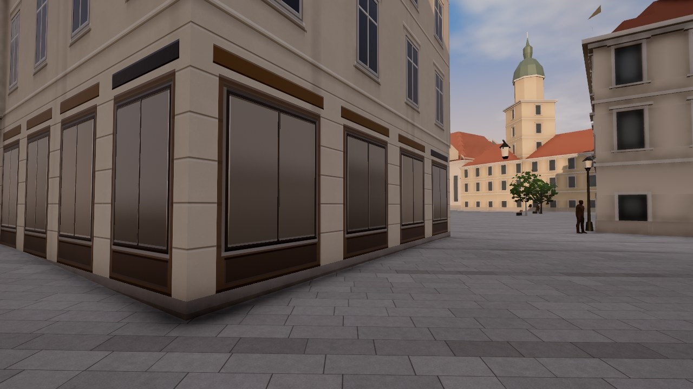
ulica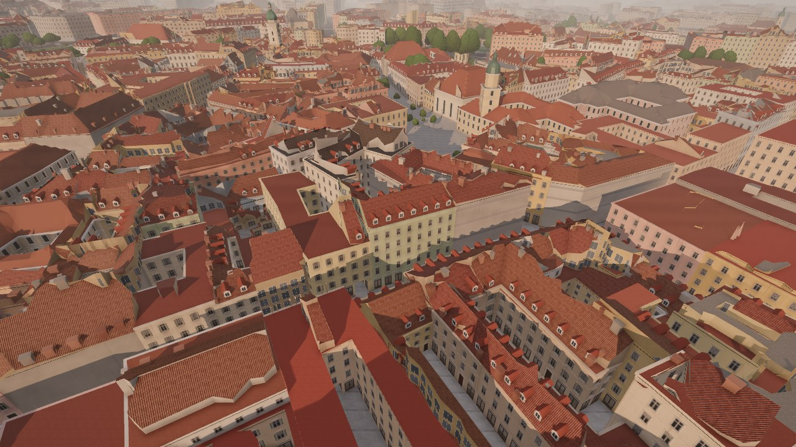
zhoraMichalská brána michalska-brana · x -78, z -140 · 394 s · nie všetky dlaždice boli postavené
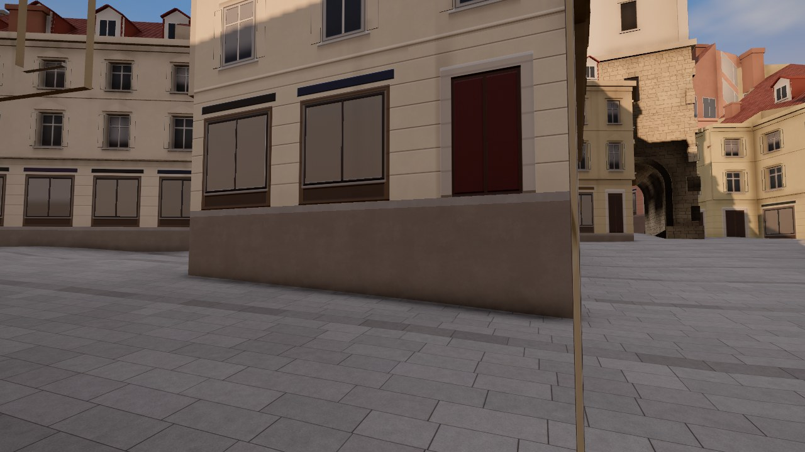
ulica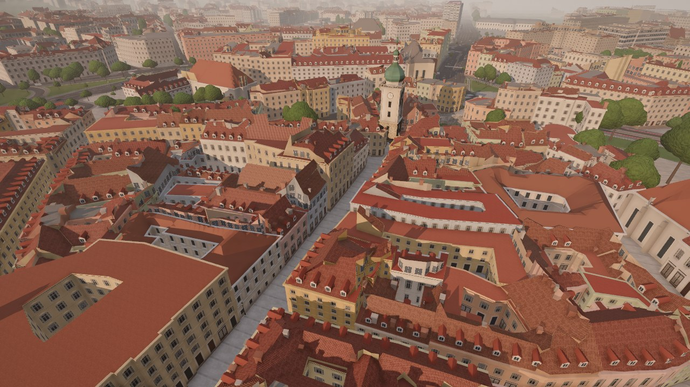
zhoraŠafárikovo námestie safarikovo-namestie · x 620, z 215 · 394 s · nie všetky dlaždice boli postavené
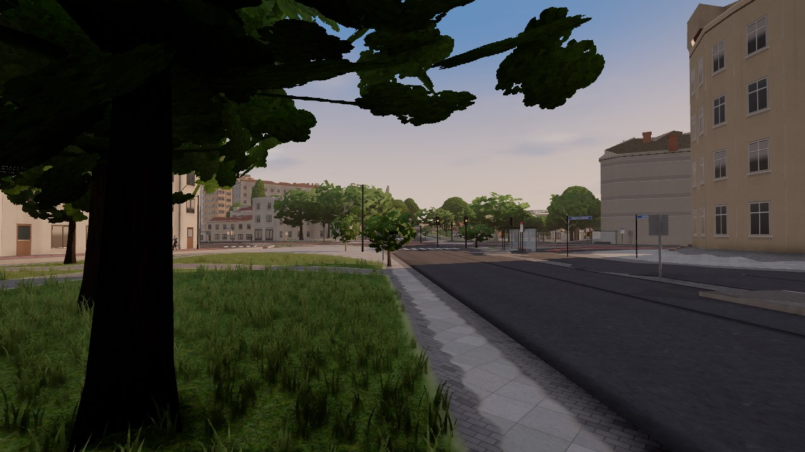
ulica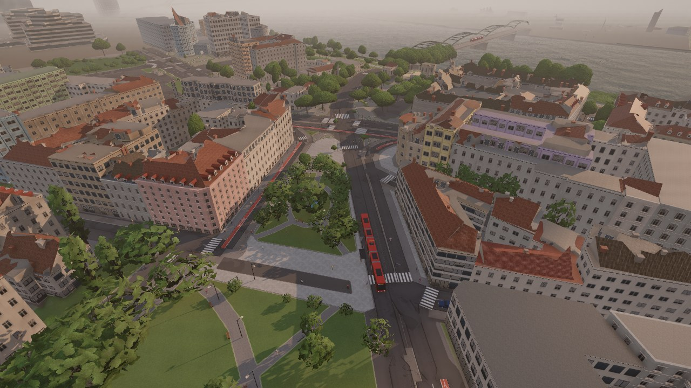
zhoraNábrežie pri Eurovei eurovea-nabrezie · x 1100, z 430 · 389 s · nie všetky dlaždice boli postavené
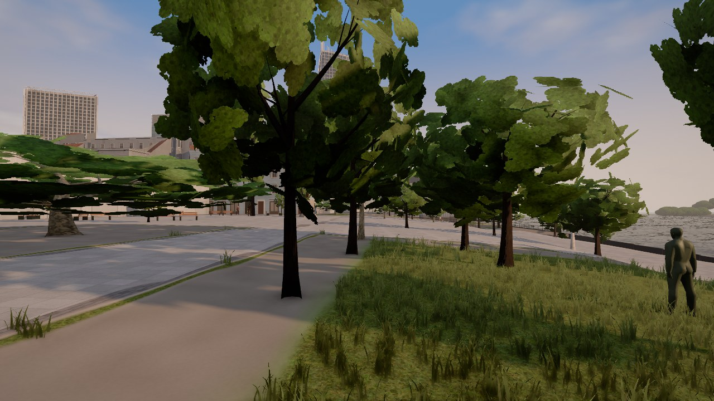
ulica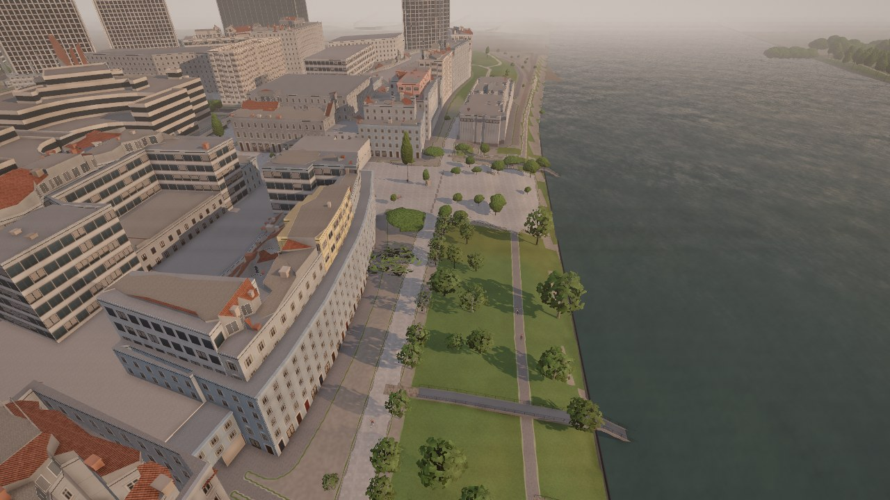
zhoraTrnavské mýto trnavske-myto · x 1500, z -1635 · 407 s · nie všetky dlaždice boli postavené
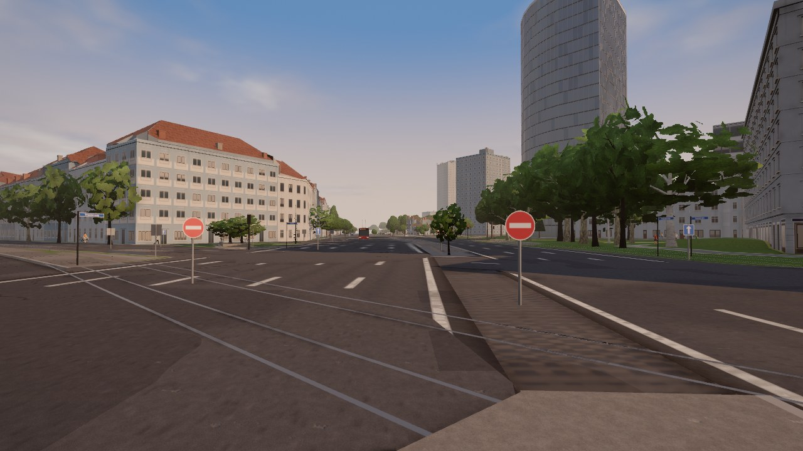
ulica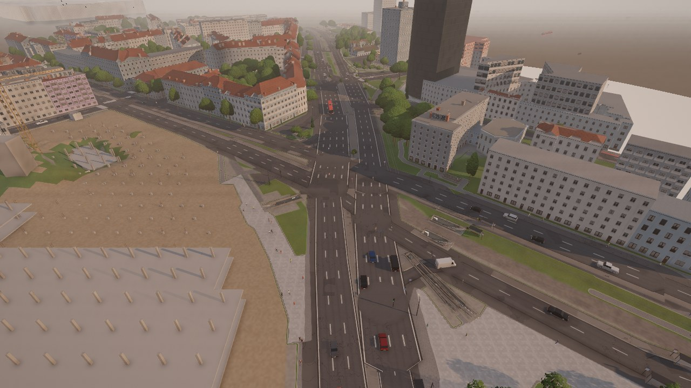
zhoraMlynská dolina – Átriaky mlynska-dolina · x -2902, z -1770 · 403 s · nie všetky dlaždice boli postavené
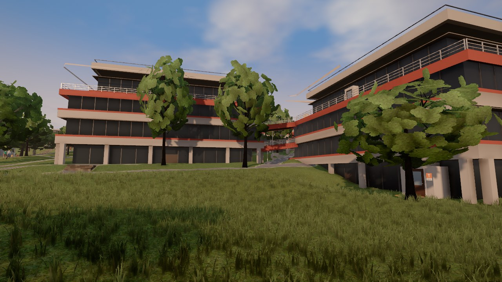
ulica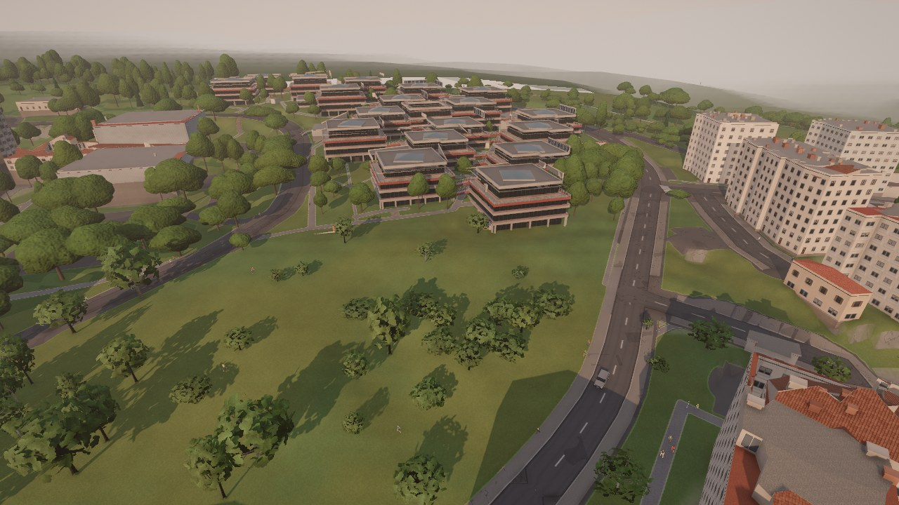
zhora